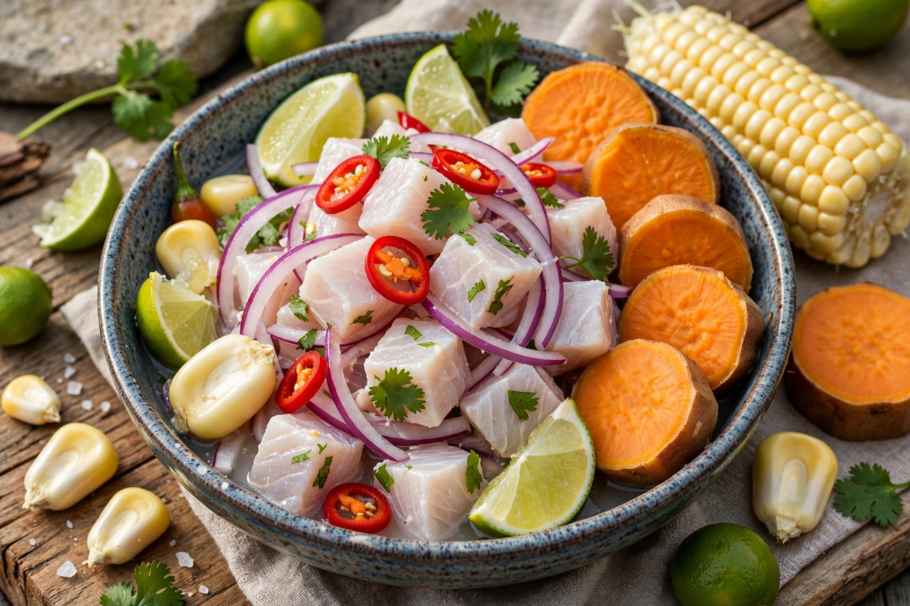

From Wikipedia, the free encyclopedia

| Ceviche | |
|---|---|
| Type | Seafood dish |
| Region | Pacific coastal Latin America; national dish of Peru |
| Main ingredients | Raw fish or seafood, lime (or lemon) juice, onion, chili peppers, salt, cilantro |
| Marinade | Leche de tigre ("tiger's milk") |
| UNESCO | Practices and meanings of Peruvian ceviche inscribed on the Representative List of Intangible Cultural Heritage (2023) |
Ceviche (also spelled cebiche, seviche, or sebiche) is a dish of raw fish or seafood cured ("cooked") in fresh citrus juice — most often lime — and seasoned with onion, salt, chili peppers, and herbs. It is popular throughout the Pacific coastal regions of Latin America and is the national dish of Peru, where it is made with sea bass (corvina) or other white fish, red onion, and ají limo chili, and served with sweet potato, large-kernel Andean corn (choclo), and sometimes cancha (toasted corn). The citrus marinade that accumulates is called leche de tigre ("tiger's milk") and is prized in its own right, drunk as a shot or appetiser.
Pre-Inca peoples of Peru's coast, including the Moche (whose ceramics depict fish preparation), are believed to have marinated fish in the juice of tumbo (banana passionfruit) and chicha (fermented maize drink) some 2,000 years ago; the Inca similarly preserved fish with salt, chilli, and acidic fruit. Limes and onions arrived with Spanish colonisation in the 16th century, and the dish took its modern form in Peru, blending Indigenous technique with Spanish ingredients (and later influences from Japanese immigration, which produced the Nikkei variation tiradito — sashimi-like slices dressed at the moment of serving). The name's etymology is disputed: candidates include Quechua siwichi ("fresh/tender fish"), Spanish cebo ("bait/lure"), and Arabic sikbaj (a meat dish with vinegar, ancestor also of escabeche) via Moorish Spain.
Peru's government declared ceviche part of the nation's cultural heritage in 2004 and instituted a National Ceviche Day (28 June). In December 2023 UNESCO added "practices and meanings associated with the preparation and consumption of ceviche" to its Representative List of the Intangible Cultural Heritage of Humanity.
Fresh fish is cut into bite-sized cubes, salted, and dressed with lime juice, sliced red onion, and chilli; the acid denatures the surface proteins, turning the flesh opaque and firm in texture without heat. Peruvian ceviche is marinated only briefly — traditionally minutes, in the modern style — so the interior remains silky. The critical caveat is that citrus does not reliably kill bacteria or parasites: health authorities warn that raw-fish ceviche carries risks (including Anisakis worms in untreated fish and Vibrio bacteria), that fish should be commercially frozen first to kill parasites, and that pregnant and immunocompromised people should avoid it. Historically, ceviche stalls in Peruvian markets operate in the morning, serving the day's catch for lunch; eating it at night was once considered improper.